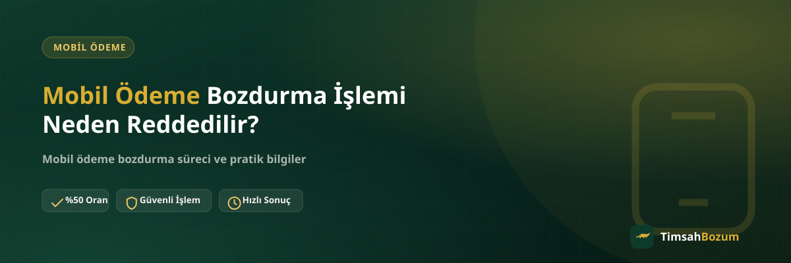

Mobil ödeme bozdurma işlemleri çoğu zaman tek turda sonuçlanır, ama bazen bir talep ilk mesajda onaylanmaz. Bunun nedeni genelde kötü niyet değil, eksik veya yanlış anlaşılan bir bilgidir. Bu yazıda mobil ödeme bozdurma talebinin en sık hangi durumlarda reddedildiğini ve bunu nasıl önleyebileceğini anlatıyoruz.
Mobil Ödeme Bozdurma Talebi Hangi Durumlarda Reddedilir?
Bir bozdurma talebinin reddedilmesi, genellikle işlemi tamamlamak için gereken bilgilerden birinin eksik, güncel olmayan ya da tutarsız olmasından kaynaklanır. Aşağıdaki başlıklarda bu durumların her birini ayrı ayrı ele alıyoruz, çünkü her biri farklı bir sebepten ortaya çıkıyor ve farklı bir şekilde çözülüyor.
Bakiye Ekran Görüntüsü Güvenilir Görünmüyorsa Ne Olur?
Mobil ödeme bakiyeni gösteren ekran görüntüsü işlemin temelidir. Görüntüde tutar net okunmuyorsa, tarih eski görünüyorsa veya hangi hatta ait olduğu belirsizse, işlem güvenle onaylanamaz. Bu durum kötü niyetli bir reddedilme değildir, sadece elimizdeki bilginin işlem yapmaya yetecek kadar net olmamasıdır. Güncel tarihli, tutarı ve operatör bilgisi net görünen bir ekran görüntüsü bu sorunu baştan ortadan kaldırır.
Eksik veya Çelişkili Bilgi Paylaşımı Neden Sorun Çıkarır?
Bazen ilk mesajda paylaşılan bilgi ile sonradan gönderilen ekran görüntüsü birbiriyle uyuşmaz; örneğin sözle belirtilen tutar ile görüntüdeki tutar farklı olabilir. Böyle bir çelişki fark edildiğinde işlem otomatik olarak durdurulur, çünkü hangi bilginin doğru olduğu netleşmeden ilerlemek risklidir. Bu noktada tek yapman gereken doğru bilgiyi tekrar ve net şekilde paylaşmak; süreç kaldığı yerden devam eder.
Oranı Teyit Etmeden Paylaşılan Bilgi İşlemi Reddettirir mi?
Sitede yayınlanan oran genel bir referanstır, işlem anındaki güncel oran WhatsApp üzerinden teyit edilir. Oranı hiç sormadan doğrudan "bozdurun" diyerek bilgi paylaşmak işlemi reddettirmez ama karşı taraf oranı teyit etmeden ilerlemez, bu da sürecin bir adım geriden başlamasına yol açar. Teyit adımını atlamamak, hem senin hem karşındaki hattın aynı sayfada olmasını sağlar ve gereksiz gecikmeyi önler.
Hat Sahipliği veya Operatör Uyuşmazlığı Reddedilmeye Yol Açar mı?
Paylaşılan bakiye görüntüsünün hangi operatöre ait olduğu (Vodafone, Türk Telekom veya Turkcell) net değilse ya da belirtilen operatörle görüntüdeki bilgi uyuşmuyorsa, işlem netleştirilene kadar bekletilir. Operatöre göre oranlar ve süreç farklı işlediği için bu bilginin doğru olması önemlidir; hangi operatörde nasıl ilerlediğini mobil ödeme bozdurma sayfamızdan kontrol edebilirsin.
Çalışma Saatleri Dışında Gönderilen Talepler Reddedilir mi?
Hayır, reddedilmez. TimsahBozum 10:00 ile 03:00 arası aktif; bu saatler dışında gönderilen bir mesaj kaybolmaz, sadece hat açıldığında sırasıyla yanıtlanır. Karışıklık genelde burada değil, kişinin yanıt gecikmesini bir ret sanıp aynı mesajı art arda göndermesinde yaşanır. Bu, sırayı değiştirmediği gibi konuşmayı karmaşıklaştırır.
SMS Doğrulama Kodu İstenmesi Normal midir?
Hayır, kesinlikle değildir. Bozum işlemi hiçbir aşamada senden SMS doğrulama kodu istemez. Böyle bir talep gelirse bu resmi hattımızdan gelen bir istek değildir ve işlemi durdurup durumu bildirmen gerekir. Bu tür bir kod paylaşımı hesabına veya hattına erişim vermek anlamına gelir, bozum sürecinin normal bir parçası değildir.
Ret ile Gecikme Arasındaki Fark Nedir?
Bu iki durum sık sık birbirine karıştırılıyor. Ret, paylaşılan bilginin işleme alınamayacak kadar eksik veya tutarsız olduğu, düzeltme yapılmadan ilerlenemeyeceği anlamına gelir. Gecikme ise bilginin doğru olduğu ama yoğunluk, çalışma saatleri dışı bir zaman ya da oran teyidinin henüz yapılmamış olması gibi nedenlerle sürecin biraz zaman almasıdır. Bir mesaja kısa sürede yanıt gelmemesi tek başına reddedildiğin anlamına gelmez; asıl ret durumunda karşı taraf hangi bilginin eksik veya hatalı olduğunu açıkça belirtir.
Farklı Bir Numaradan Gelen Taleplerde Ret Riski Artar mı?
TimsahBozum işlemleri yalnızca resmi WhatsApp hattımız üzerinden yürür. Instagram DM'i, farklı bir telefon numarası veya başka bir platform üzerinden "TimsahBozum adına" gelen bir talep varsa bu resmi bir işlem değildir ve reddedilmesi beklenir, çünkü kimlik doğrulaması yapılamaz. Bilgi paylaşmadan önce her zaman numarayı sitede yayınlanan resmi hatla (+90 543 887 21 71) karşılaştırman, hem seni dolandırıcılıktan korur hem de işleminin gerçek hattımızda değerlendirilmesini garanti eder.
Reddedilen Bir İşlem Nasıl Tekrar Başlatılır?
Ret, kalıcı bir engel değil, o anki bilginin işlem yapmaya yetmediğinin bir göstergesidir. Sebebi öğrendikten sonra (güncel ekran görüntüsü, doğru operatör bilgisi veya net tutar gibi) eksiği tamamlayıp aynı WhatsApp hattından devam edebilirsin. Çoğu durumda bu, birkaç dakika içinde çözülen basit bir düzeltmedir.
Reddedilmeyi Önlemek İçin Neye Dikkat Etmelisin?
İlk mesajında hangi operatöre ait bir bakiyen olduğunu, güncel tutarını gösteren okunaklı bir ekran görüntüsünü ve varsa özel bir durumunu (örneğin aile hattı, faturalı/faturasız hat gibi) tek seferde paylaşmak süreci büyük ölçüde hızlandırır. Bilgi ne kadar net ve tutarlı olursa, işlemin ilk turda sonuçlanma ihtimali o kadar yüksek olur.
İlgili Yazılar
- Google Play Kodu Bozdurma İşlemi Neden Reddedilir?
- Mobil Ödeme Limitim Neden Kapalı, Nasıl Açılır?
- Mobil Ödeme Bakiyesi Bozdururken Hangi Ekran Görüntüsü İstenir?
Talebinin reddedildiğini düşünüyorsan ya da işlemine yeni başlayacaksan, güncel bilgini hazırlayıp WhatsApp hattımıza yazman yeterli.